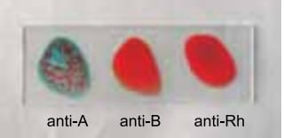

Análise Das Provas
Física
O que é um campo eletrico?
Campo elétrico é uma grandeza física vetorial que mede o módulo da força elétrica exercida sobre cada unidade de carga elétrica colocada em uma região do espaço sobre a influência de uma carga geradora de campo elétrico.
Video ExplicaçãoEspanhol
Los pronombres personales complementos que completan correctamente la frase “Te presto el libro de matemáticas y espero que devuelvas pronto”, son:
a)se-le
b)se-lo
c)me-lo
d)te-me
e)le-la
Redes e Segurança da Informação
Sobre os tipos de transmissão de dados é correto afirmar:
a) O modo de transmissão Full-Duplex é unidirecional e caracterizado por um dispositivo transmissor e outro receptor.
b) No modo de transmissão Half-Duplex a transmissão é verdadeiramente bidirecional. O celular é um exemplo de tecnologia que utiliza este tipo de transmissão.
c) Na transmissão de dados do tipo Half-Simplex, a comunicação é bidirecional, mas como o transmissor e o receptor compartilham o mesmo canal de comunicação, não é possivel enviar e receber dados ao mesmo tempo.-
d) No modo de transmissão Simplex, a comunicação entre os dispositivos "A" e "B" ocorre de forma unidirecional, onde o dispositivo "A" é o transmissor e o dispositivo "B" é o receptor, sendo que este papel não se inverte."
e) O modo de transmissão Full-Duplex tem as mesmas características do Half-Duplex
Simplex: a comunicação é efetuada em apenas uma direção (unidirecional)
Half-Duplex (HDX): esse tipo de transmissão de dados é bidirecional alternado, mas, por compartilharem um mesmo canal de comunicação, não é possível enviar e receber dados ao mesmo tempo.
Full-Duplex (FDX): a verdadeira comunicação bidirecional simultâneo.
Sociologia
3)"Em si mesmo, o homem não é bom nem mau, mas, de fato, tende a ser mau. Consequentemente, o político não deve confiar no aspecto positivo do homem, mas, sim, constatar o seu aspecto negativo e agir em consequência disso. Assim, não hesitará em ser temido e a tomar as medidas necessárias para tornar-se temível. Claro, o ideal seria o de ser ao mesmo tempo amado e temido. Mas essas duas coisas são muito difíceis de ser conciliadas e, assim, deve fazer a escolha mais funcional para o governo eficaz do Estado." Considerando a filosofia renascentista, o pensamento descrito anteriormente deve-se a:
a)Nicolau Maquiavel
b)Erasmo de Roterda
c)Miguel de Cervantes.
d)Michel Foucault
Nicolau Maquiavel, em sua principal obra "O príncipe" escreveu um dos primeiros tratados sobre política do século XVI. Os dois conceitos mais importantes da obra de Maquiavel é virtu (virtude) e fortuna. O Príncipe virtuoso é aquele que consegue calcular as relações políticas da sociedade e cria estratégias para cada situação. Já a fortuna é o acaso, a sorte, porém com um príncipe virtuoso o fortuna poderá ser prevista e antecipada.
Biologia
A imagem da lâmina a seguir mostra um resultado obtido em teste de tipagem sanguínea humana para os sistemas ABO e Rh. O método consiste, basicamente, em pingar três gotas de sangue da mesma pessoa sobre três gotas de reagentes: anti-A, anti-B e anti-Rh.
O resultado obtido nessa lâmina permite afirmar que o sangue da pessoa testada é do tipo
a) Rh+, pois apresenta aglutinogênios A e Rh em suas hemácias.
b) Rh–, pois apresenta aglutininas anti-A em seu plasma.
c) Rh+, pois apresenta aglutinogênios B e Rh em suas hemácias.
d) Rh+, pois apresenta aglutininas anti-B e anti-Rh em seu plasma.
e) Rh–, pois apresenta aglutinogênios A em suas hemácias
Video Explicação